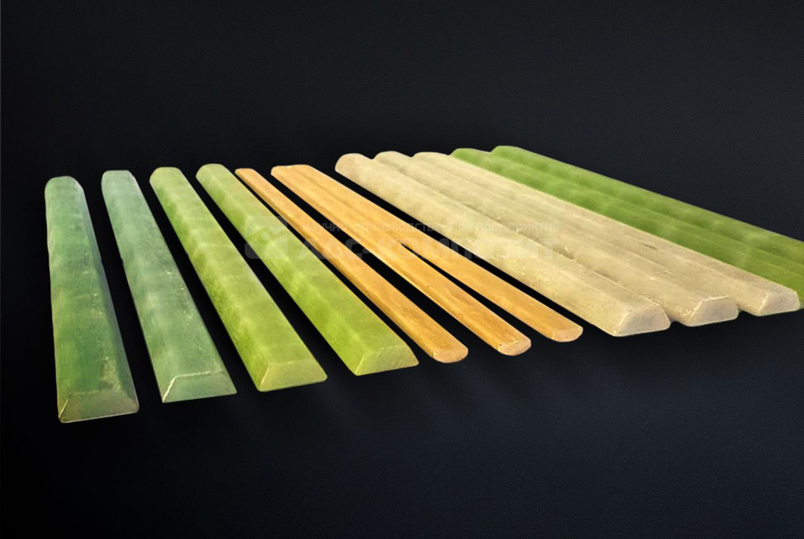
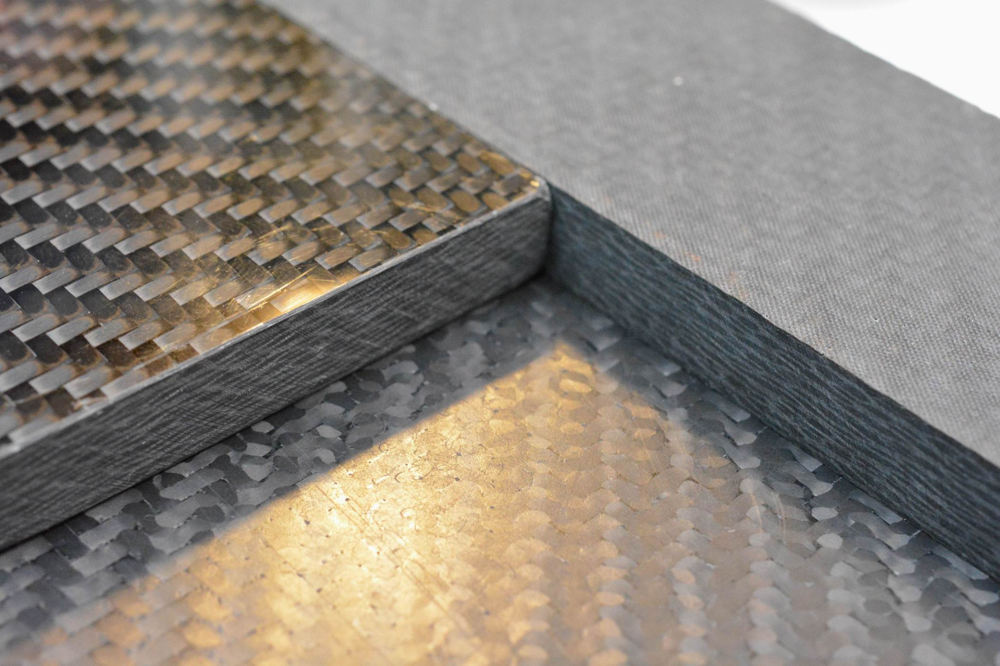
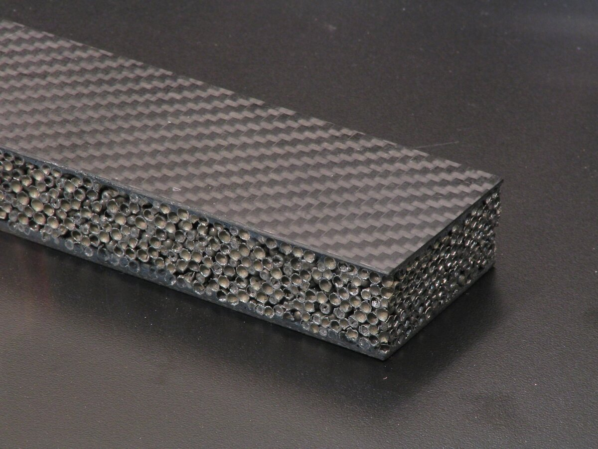
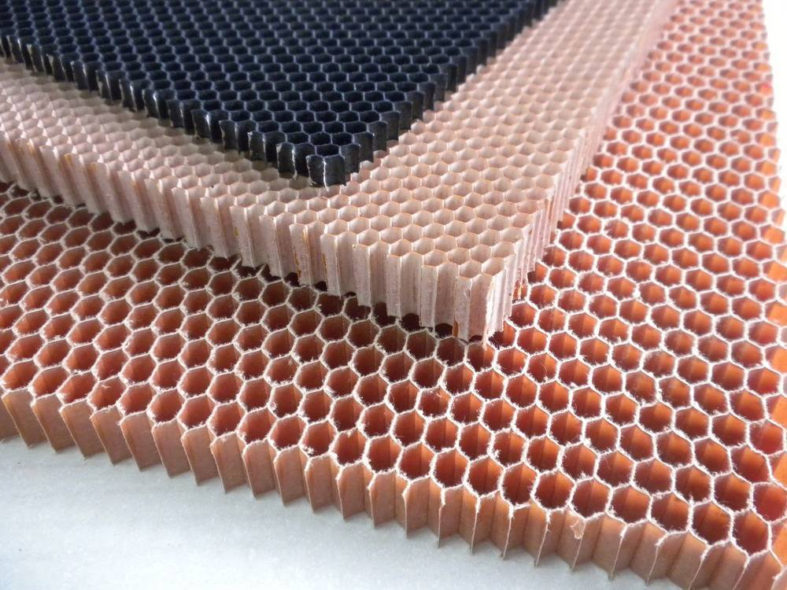
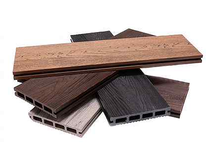
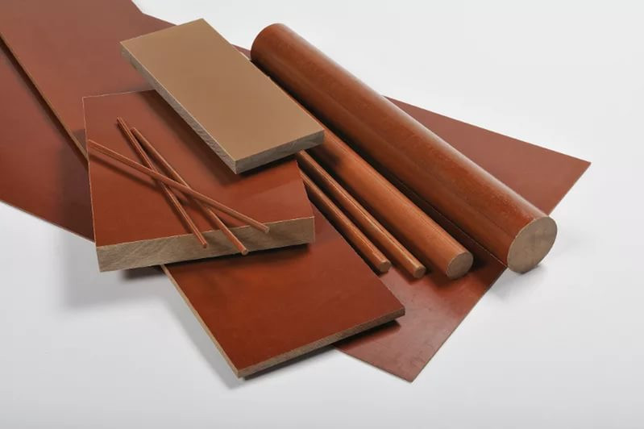

Виды полимерных композиционных материалов |
||
| Стеклопластики |
Полимерные композиционные материалы, армированные стеклянными волокнами, которые формуют из расплавленного неорганического стекла. В качестве матрицы чаще всего применяют как термореактивные синтетические смолы (фенольные, эпоксидные, полиэфирные и т.д.), так и термопластичные полимеры (полиамиды, полиэтилен, полистирол и т.д.). Эти материалы обладают достаточно высокой прочностью, низкой теплопроводностью, высокими электроизоляционными свойствами, кроме того, они прозрачны для радиоволн. Использование стеклопластиков началось в конце Второй мировой войны для изготовления антенных обтекателей – куполообразных конструкций, в которых размещается антенна локатора. В первых армированных стеклопластиках количество волокон было небольшим, волокно вводилось, главным образом, чтобы нейтрализовать грубые дефекты хрупкой матрицы. Однако со временем назначение матрицы изменилось – она стала служить только для склеивания прочных волокон между собой, содержание волокон во многих стеклопластиках достигает 80% по массе. Слоистый материал, в котором в качестве наполнителя применяется ткань, плетенная из стеклянных волокон, называется стеклотекстолитом. |
 |
| Углепластики |
Наполнителем в этих полимерных композитах служат углеродные волокна. Углеродные волокна получают из синтетических и природных волокон на основе целлюлозы, сополимеров акрилонитрила, нефтяных и каменноугольных пеков и т.д. Термическая обработка волокна проводится, как правило, в три этапа (окисление – 220° С, карбонизация – 1000–1500° С и графитизация – 1800–3000° С) и приводит к образованию волокон, характеризующихся высоким содержанием (до 99,5% по массе) углерода. В зависимости от режима обработки и исходного сырья полученное углеволокно имеет различную структуру. Для изготовления углепластиков используются те же матрицы, что и для стеклопластиков – чаще всего – термореактивные и термопластичные полимеры. Основными преимуществами углепластиков по сравнению со стеклопластиками является их низкая плотность и более высокий модуль упругости, углепластики – очень легкие и, в то же время, прочные материалы. Углеродные волокна и углепластики имеют практически нулевой коэффициент линейного расширения. Все углепластики хорошо проводят электричество, черного цвета, что несколько ограничивает области их применения. На основе углеродных волокон и углеродной матрицы создают композиционные углеграфитовые материалы – наиболее термостойкие композиционные материалы (углеуглепластики), способные долго выдерживать в инертных или восстановительных средах температуры до 3000° С. Существует несколько способов производства подобных материалов. По одному из них углеродные волокна пропитывают фенолформальдегидной смолой, подвергая затем действию высоких температур (2000° С), при этом происходит пиролиз органических веществ и образуется углерод. Чтобы материал был менее пористым и более плотным, операцию повторяют несколько раз. Другой способ получения углеродного материала состоит в прокаливании обычного графита при высоких температурах в атмосфере метана. Мелкодисперсный углерод, образующийся при пиролизе метана, закрывает все поры в структуре графита. Плотность такого материала увеличивается по сравнению с плотностью графита в полтора раза. |
 |
| Боропластики |
Композиционные материалы, содержащие в качестве наполнителя борные волокна, внедренные в термореактивную полимерную матрицу, при этом волокна могут быть как в виде мононитей, так и в виде жгутов, оплетенных вспомогательной стеклянной нитью или лент, в которых борные нити переплетены с другими нитями. Благодаря большой твердости нитей, получающийся материал обладает высокими механическими свойствами (борные волокна имеют наибольшую прочность при сжатии по сравнению с волокнами из других материалов) и большой стойкостью к агрессивным условиям, но высокая хрупкость материала затрудняет их обработку и накладывает ограничения на форму изделий из боропластиков. Кроме того, стоимость борных волокон очень высока (порядка 400 $/кг) в связи с особенностями технологии их получения (бор осаждают из хлорида на вольфрамовую подложку, стоимость которой может достигать до 30% стоимости волокна). Термические свойства боропластиков определяются термостойкостью матрицы, поэтому рабочие температуры, как правило, невелики. |
 |
| Органопластики |
Композиты, в которых наполнителями служат органические синтетические, реже – природные и искусственные волокна в виде жгутов, нитей, тканей, бумаги и т.д. В термореактивных органопластиках матрицей служат, как правило, эпоксидные, полиэфирные и фенольные смолы, а также полиимиды. Материал содержит 40–70% наполнителя. Содержание наполнителя в органопластиках на основе термопластичных полимеров – полиэтилена, ПВХ, полиуретана и т.п. – варьируется в значительно больших пределах – от 2 до 70%. Органопластики обладают низкой плотностью, они легче стекло- и углепластиков, относительно высокой прочностью при растяжении; высоким сопротивлением удару и динамическим нагрузкам, но, в то же время, низкой прочностью при сжатии и изгибе. Важную роль в улучшении механических характеристик органопластика играет степень ориентация макромолекул наполнителя. Макромолекулы жесткоцепных полимеров, таких, как полипарафенилтерефталамид (кевлар) в основном ориентированы в направлении оси полотна и поэтому обладают высокой прочностью при растяжении вдоль волокон. |
 |
|
Полимеры, |
Известно более 10000 марок наполненных полимеров. Наполнители используются как для снижения стоимости материала, так и для придания ему специальных свойств. Впервые наполненный полимер начал производить доктор Бейкеленд (Leo H.Baekeland, США), открывший в начале 20 в. способ синтеза фенолформфльдегидной (бакелитовой) смолы. Сама по себе эта смола – вещество хрупкое, обладающее невысокой прочностью. Бейкеленд обнаружил, что добавка волокон, в частности, древесной муки к смоле до ее затвердевания, увеличивает ее прочность. Созданный им материал – бакелит – приобрел большую популярность. Технология его приготовления проста: смесь частично отвержденного полимера и наполнителя – пресс-порошок - под давлением необратимо затвердевает в форме. Первое серийное изделие произведено по данной технологии в 1916, это – ручка переключателя скоростей автомобиля «Роллс-Ройс». Наполненные термореактивные полимеры широко используются по сей день. Сейчас применяются разнообразные наполнители так термореактивных, так и термопластичных полимеров. Карбонат кальция и каолин (белая глина) дешевы, запасы их практически не ограничены, белый цвет дает возможность окрашивать материал. Применяют для изготовления жестких и эластичных поливинилхлоридных материалов для производства труб, электроизоляции, облицовочных плиток и т.д., полиэфирных стеклопластиков, наполнения полиэтилена и полипропилена. Добавление талька в полипропилен существенно увеличивает модуль упругости и теплостойкость данного полимера. Сажа больше всего используется в качестве наполнителя резин, но вводится и в полиэтилен, полипропилен, полистирол и т.п. По-прежнему широко применяют органические наполнители – древесную муку, молотую скорлупу орехов, растительные и синтетические волокна. Для создания биоразлагающихся композитов в качество наполнителя используют крахмал. |
 |
| Текстолиты |
Слоистые пластики, армированные тканями из различных волокон. Технология получения текстолитов была разработана в 1920-х на основе фенолформальдегидной смолы. Полотна ткани пропитывали смолой, затем прессовали при повышенной температуре, получая текстолитовые пластины. Основные принципы получения текстолитов сохранились, но сейчас из них формуют не только пластины, но и фигурные изделия. И, конечно, расширился круг исходных материалов. Связующими в текстолитах является широкий круг термореактивных и термопластичных полимеров, иногда даже применяются и неорганические связующие – на основе силикатов и фосфатов. В качестве наполнителя используются ткани из самых разнообразных волокон – хлопковых, синтетических, стеклянных, углеродных, асбестовых, базальтовых и т.д. Соответственно разнообразны свойства и применение текстолитов. |
 |
| Источники: | ||